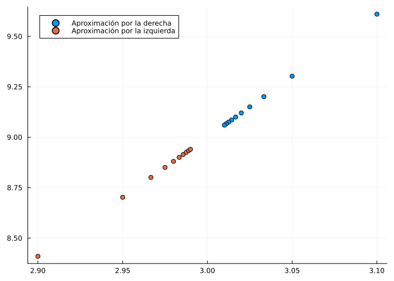
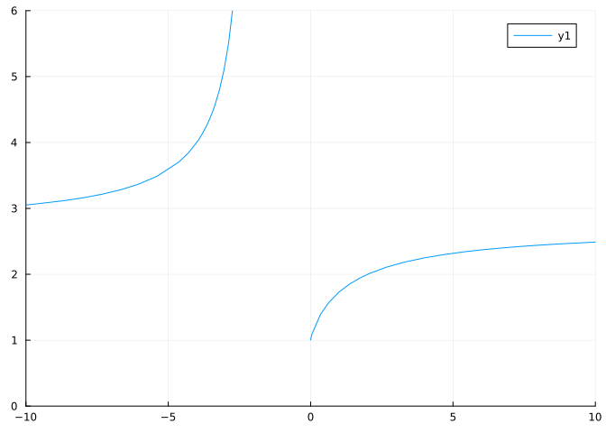
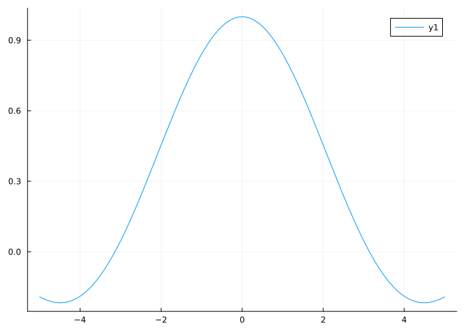
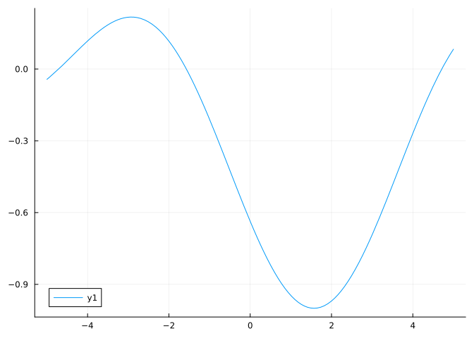
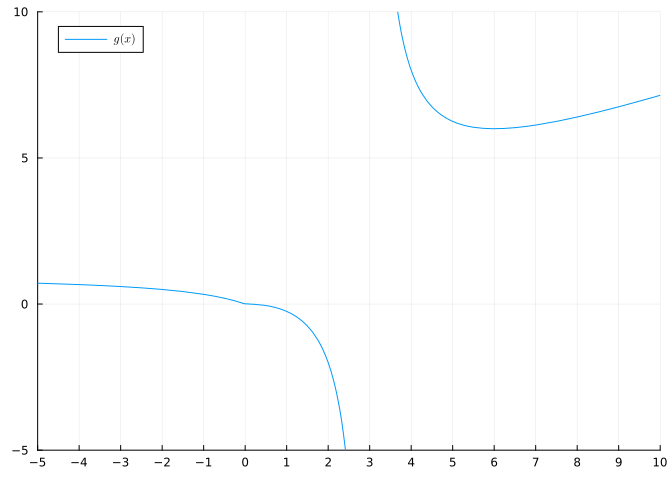
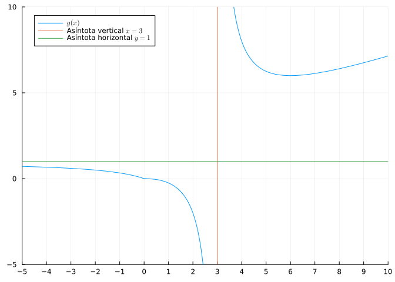
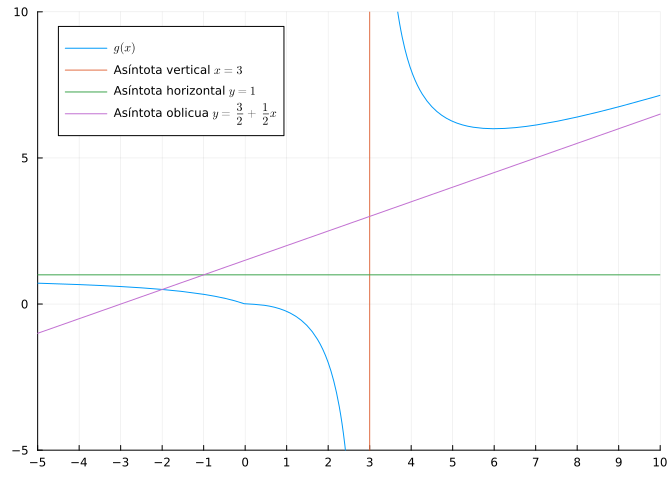
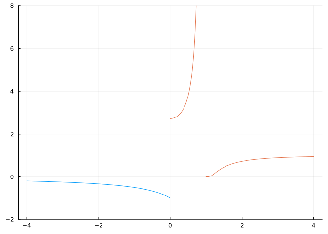

using SymPy # Para el cálculo simbólico de límites.
using Plots # Para el dibujo de gráficas.
#plotlyjs() # Para obtener gráficos interactivos.
using MTH229 # Para restringir la gráfica de una función a su dominio.
using LaTeXStrings # Para usar código LaTeX en los gráficos.4 Límites de funciones reales
4.1 Ejercicios Resueltos
Para la realización de esta práctica se requieren los siguientes paquetes:
Ejercicio 4.1 Sea la función \(f(x)=x^2\).
- Estudiar la tendencia de \(f\) cuando \(x\) se aproxima a \(3\) por la derecha, evaluando la función en \(x=3+\frac{1}{10i}\) para \(i=1,\ldots,10\).
Ayuda
Definir la función y aplicar la función a los valores de x indicados usando compresiones de arrays.
Solución
f(x) = x^2
a = 3
print([f(a+1/10i) for i = 1:10])[9.610000000000001, 9.302499999999998, 9.20111111111111, 9.150625, 9.1204, 9.100277777777777, 9.085918367346938, 9.075156250000001, 9.06679012345679, 9.060099999999998]La función tiende a \(9\).
- Estudiar la tendencia de \(f\) cuando \(x\) se aproxima a \(3\) por la izquierda, evaluando la función en \(x=3-\frac{1}{10i}\) para \(i=1,\ldots, 10\).
Solución
print([f(a-1/10i) for i = 1:10])[8.41, 8.7025, 8.801111111111112, 8.850625, 8.8804, 8.900277777777777, 8.914489795918367, 8.925156249999999, 8.933456790123458, 8.940100000000001]La función también tiende a 9.
- Dibujar la gráfica de los valores de \(f\) evaluados en los apartados anteriores diferenciando la tendencia por la izquierda de la tendencia por la derecha.
Ayuda
Definir un vector con los valores de \(x\) y otro con los valores correspondientes de \(f(x)\) y usar la función scatter del paquete Plots, pasandole los dos vectores.
Solución
xd = [a+1/10i for i=1:10]
scatter(xd, f.(xd), label="Aproximación por la derecha")
xi = [a-1/10i for i=1:10]
scatter!(xi, f.(xi), label="Aproximación por la izquierda", legend=:topleft)
- Calcular el límite por la izquierda y por la derecha de \(f\) en \(x=3\).
Ayuda
Declarar la variable simbólica x con @vars imponiento la restricción real=true, definir la función y usar la función limit del paquete SymPy para calcular los límites laterales de la función. Para el límite por la izquierda indicar el parámetro dir="-" y para el límite por la derecha dir="+".
Solución
@vars x real=true
li = limit(f(x), x=>3, dir="-")
println("Límite por la izquierda: ", li)
ld = limit(f(x), x=>3, dir="+")
println("Límite por la derecha: ", ld)Límite por la izquierda: 9
Límite por la derecha: 9Ejercicio 4.2 Sea la función \(g(x)=(1+x)^{1/x}\).
- Estudiar la tendencia de \(g\) cuando \(x\) se aproxima a \(0\) por la derecha, evaluando la función en \(x=\frac{1}{10^i}\) para \(i=1,\ldots,10\).
Solución
g(x) = (1+x)^(1/x)
a = 0
print([g(a+1/10^i) for i = 1:10])[2.5937424601000023, 2.7048138294215285, 2.7169239322355936, 2.7181459268249255, 2.718268237192297, 2.7182804690957534, 2.7182816941320813, 2.7182817983473577, 2.71828205201156, 2.7182820532347876]La función tiende a \(e\).
- Estudiar la tendencia de \(g\) cuando \(x\) se aproxima a \(0\) por la izquierda, evaluando la función en \(x=-\frac{1}{10^i}\) para \(i=1,\ldots, 10\).
Solución
print([g(a-1/10^i) for i = 1:10])[2.867971990792441, 2.7319990264290284, 2.7196422164428524, 2.71841775501015, 2.718295419980405, 2.7182831876793716, 2.7182819629423656, 2.7182818557091664, 2.7182817529399266, 2.718282053506616]La función también tiende a e.
- Calcular el límite por la izquierda y por la derecha de \(g\) en \(x=0\).
Solución
@vars x real=true
li = limit(g(x), x=>0, dir="-")
println("Límite por la izquierda: ", li)
ld = limit(g(x), x=>0, dir="+")
println("Límite por la derecha: ", ld)Límite por la izquierda: E
Límite por la derecha: EEjercicio 4.3 Considérese la función \[ f(x)=\left( 1+\frac{2}{x}\right) ^{x/2}. \]
Dibujar su gráfica, y a la vista de misma conjeturar el resultado de los siguientes límites:
\(\lim_{x\rightarrow -2^-} f(x)\)
\(\lim_{x\rightarrow -2^+} f(x)\)
\(\lim_{x\rightarrow -\infty} f(x)\)
\(\lim_{x\rightarrow +\infty} f(x)\)
\(\lim_{x\rightarrow 2} f(x)\)
\(\lim_{x\rightarrow 0} f(x)\)
Ayuda
Utilizar la función plot! del paquete Plots. Usar los parámetros xlims=(a,b) para restringir la región de dibujo al intervalo \((a,b)\) del eje \(x\), y ylims=(c,d) para restringir la región de dibujo al intervalo \((c,d)\) del eje \(y\).
Solución
using Plots
f(x) = (1+2/x)^(x/2)
plot(f, xlims=(-10,10), ylims=(0,6))
A la vista de la gráfica, se puede concluir que
- \(\lim_{x\rightarrow -2^-} f(x) = -\infty.\)
- \(\lim_{x\rightarrow -2^+} f(x)\) no existe.
- \(\lim_{x\rightarrow -\infty} f(x)\approx 2.7.\)
- \(\lim_{x\rightarrow +\infty} f(x) \approx 2.7.\)
- \(\lim_{x\rightarrow 2} f(x) = 2.\)
- \(\lim_{x\rightarrow 0} f(x)\) no existe.
- Calcular los límites anteriores. ¿Coinciden los resultados con los conjeturados?
Solución
using SymPy
@vars x real=true
println("Límite por la izquieda en -2: ", limit(f(x), x=>-2, dir="-"))
println("Límite por la izquieda en -2: ", limit(f(x), x=>-2, dir="+"))
println("Límite en -∞: ", limit(f(x), x=>-oo))
println("Límite en ∞: ", limit(f(x), x=>oo))
println("Límite en 2: ", limit(f(x), x=>2))
println("Límite en 0: ", limit(f(x), x=>0))Límite por la izquieda en -2: oo
Límite por la izquieda en -2: -oo
Límite en -∞: E
Límite en ∞: E
Límite en 2: 2
Límite en 0: 1
Precaución
Aunque Julia calcula el límite en \(-2\) por la derecha y el límite en \(0\), a la vista de la gráfica, estos límites en realidad no existen, ya que la función no está definida en el intervalo de \([-2,0]\).
Ejercicio 4.4 Calcular los siguientes límites
- \(\lim_{x\to 0} \operatorname{sen}\left(\frac{1}{x}\right)\)
Solución
using SymPy
@vars x real=true
limit(sin(1/x), x=>0)\(\left\langle -1, 1\right\rangle\)
Como no se obtiene un valor concreto, sino un rango de valores, el límite no existe.
- \(\lim_{x\to 0} x\operatorname{sen}\left(\frac{1}{x}\right)\)
Solución
limit(x*sin(1/x), x=>0)\(0\)
- \(\lim_{x\to \infty} e^{-x}\operatorname{sen}(x)\)
Solución
limit(ℯ^(-x)*sin(x), x=>oo)\(0\)
- \(\lim_{x\to a} \frac{\operatorname{sen}(x)-\operatorname{sen}(a)}{x-a}\)
Solución
@vars a real=true
limit((sin(x)-sin(a))/(x-a), x=>a)\(\cos{\left(a \right)}\)
Ejercicio 4.5 Calcular el valor de las siguientes funciones en los puntos dados y su límite. Corroborar los límites obtenidos gráficamente.
- \(f(x)=\frac{\operatorname{sen}(x)}{x}\) en \(x=0\).
Solución
La función \(f\) no está definida en \(x=0\) de manera que al evaluarla en \(0\) obtenemos un valor indeterminado.
f(x)=sin(x)/x
f(0)NaNAhora calculamos el límite de \(f\) en \(0\).
@vars x real=true
f(x)=sin(x)/x
limit(f(x), x=>0)\(1\)
Para corroborar el límite dibujamos la gráfica de \(f\) en un entorno de \(0\).
using Plots
plot(f)
- \(g(x)=\frac{\cos(x)}{x-\pi/2}\) en \(x=\pi/2\).
Solución
La función \(f\) no está definida en \(x=0\) de manera que al evaluarla en \(0\) obtenemos un valor indeterminado.
g(x)=cos(x)/(x-pi/2)
g(pi/2)InfComo se puede observar, se obtiene \(\infty\) en lugar de indeterminado. La razón está en la representación de los números reales mediante números con coma flotante, de manera que \(\pi/2\) se redondea al número de coma flotante más próximo, y al aplicar el coseno se obtiene un número muy próximo a \(0\) pero distinto de \(0\).
Ahora calculamos el límite de \(g\) en \(\pi/2\).
limit(g(x), x=>pi/2)\(\infty\)
Para corroborar el límite dibujamos la gráfica de \(g\) en un entorno de \(\pi/2\).
using Plots
plot(g)
Como se puede apreciar gráficamente el la tendencia de \(g\) en \(\pi/2\) es \(-1\) y no el valor obtenido con el cálculo del límite. De nuevo el problema está en la aproximación de \(pi\) como un real en coma flotante. Afortunadamente el paquete SymPy permite definir una constante como simbólica para evitar su conversión a número en coma flotante, usando la función Sym(). Repetimos la definición de la función y el cálculo de nuevo convirtiendo \(\pi\) en una constante simbólica.
g(x)=cos(x)/(x-Sym(pi)/2)
limit(g(x), x=>Sym(pi)/2)\(-1\)
Ejercicio 4.6 Considérese la función \[ g(x)= \begin{cases} \dfrac{x}{x-2} & \mbox{si $x\leq 0$;} \\ \dfrac{x^2}{2x-6} & \mbox{si $x>0$;} \end{cases} \]
- Dibujar la gráfica de \(g\) y determinar gráficamente si existen asíntotas.
Ayuda
Para respetar las discontinuidades utilizar la función rangeclamp() del paquete MTH229.
Solución
using Plots, MTH229, LaTeXStrings
@vars x real=true
g1(x) = x/(x-2)
g2(x) = x^2/(2x-6)
g(x) = x<=0 ? g1(x) : g2(x)
plot(rangeclamp(g), xlims=(-5,10), ylims=(-5,10), xticks=-5:10, label = L"g(x)", legend=:topleft)
A la vista de la gráfica, se observa que \(g\) tiene una asíntota vertical en \(x=3\), una asíntota horizontal \(y=1\) en \(-\infty\) y parece que también hay una asíntota oblicua en \(\infty\).
- Calcular las asíntotas verticales de \(g\) y dibujarlas.
Solución
Estudiamos primero el dominio para ver dónde no está definida la función. Como tanto la rama negativa como la positiva son funciones racionales, hay que ver los puntos que anulan el denominador.
println("Puntos fuera del dominio de la rama negativa: ", solve(x-2))
println("Puntos fuera del dominio de la rama positiva: ", solve(2x-6))Puntos fuera del dominio de la rama negativa: Sym[2]
Puntos fuera del dominio de la rama positiva: Sym[3]Así pues la rama negativa está definida en todos \(\mathbb{R}^-\) y la rama positiva en \(\mathbb{R}^+\setminus\{3\}\). Es en este último punto donde \(g\) puede tener asíntota vertical, así que estudiamos los límites laterales.
println("Límte en 3 por la izquierda: ", limit(g(x), x=>3, dir="-"))
println("Límte en 3 por la derecha: ", limit(g(x), x=>3, dir="+"))Límte en 3 por la izquierda: -oo
Límte en 3 por la derecha: ooPor tanto, \(g\) tiene una asíntota vertical en \(x=3\).
vline!([3], label = L"Asíntota vertical $x=3$")
- Calcular las asíntotas horizontales de \(g\).
Solución
Estudiamos los límites en el infinito.
println("Límite en -∞: ", limit(g1(x), x=>-oo))
println("Límite en ∞: ", limit(g2(x), x=>oo))Límite en -∞: 1
Límite en ∞: ooPor tanto, \(g\) tiene una asíntota horizontal \(y=1\) en \(-\infty\).
hline!([1], label = L"Asíntota horizontal $y=1$")
- Calcular las asíntotas oblicuas de \(g\).
Solución
Estudiamos el límite en \(\infty\) de \(\frac{f(x)}{x}\) (en \(-\infty\) no puede haber asíntota oblicua al haber asíntota horizontal).
limit(g2(x)/x, x=>oo)\(\frac{1}{2}\)
Por tanto, \(g\) tiene una asíntota oblicua con pendiente \(b=1/2\) en \(\infty\). Para obtener el término independiente de la asíntota calculamos el límite en \(\infty\) de \(f(x)-\frac{1}{2}x\).
limit(g2(x)-x/2, x=>oo)\(\frac{3}{2}\)
Por tanto, \(g\) tiene una asíntota oblicua \(y=\frac{3}{2}+\frac{1}{2}x\).
plot!(3/2+x/2, label = L"Asíntota oblicua $y=\frac{3}{2}+\frac{1}{2}x$")
Ejercicio 4.7 Dada la función
\[ h(x)= \begin{cases} \frac{2x^2-2x}{3x^2+x} & \mbox{si } x\leq 0,\\ \frac{\operatorname{tg}(x)+a}{x} & \mbox{si } x>0 \end{cases} \]
¿Qué valor debe tomar \(a\) para que la función sea continua en todo su dominio?
Ayuda
Calcular el límite en \(0\) por la izquierda de la función de la rama negativa, y el límite en \(0\) por la derecha de la función de la rama positiva. Después resolver la ecuación simbólica que resulta de igualar los dos límites. Para crear la ecuación simbólica debe utilizarse la función Eq() del paquete SymPy y después resolverla con la función solve().
Solución
@vars x a real=true
h1(x) = (2x^2-2x)/(3x^2+x)
h2(x) = (tan(x)-a*x)/x
l1 = limit(h1(x), x=>0, dir="-")
l2 = limit(h2(x),x=>0, dir="+")
solve(Eq(l1,l2))1-element Vector{Sym}:
3Ejercicio 4.8 Representar gráficamente y clasificar las discontinuidades de la función
\[ f(x)= \begin{cases} \frac{x+1}{x^2-1}, & \mbox{si } x<0, \\ \frac{1}{e^{1/(x^2-1)}}, & \mbox{si } x\geq 0. \end{cases} \]
Solución
Para estudiar las discontinuidades de una función tenemos que estudiar los puntos que no están en el dominio y los puntos donde cambia la definición de la función en el caso de una función definida a trozos.
using Plots, MTH229, LaTeXStrings
@syms x::real
f1(x) = (x+1)/(x^2-1)
f2(x) = 1/exp(1/(x^2-1))
plot(f1, -4, 0, ylim=(-2,8), legend=false)
plot!(rangeclamp(f2), 0, 4)
Para determinar el dominio de la rama negativa, al ser una función racional, tenemos que ver los puntos que anulan el denominador.
solve(x^2-1)2-element Vector{Sym}:
-1
1Así pues, la función no está definida en \(x=-1\) (la otra raíz queda fuera de la rama negativa). Para ver el tipo de discontinuidad estudiamos los límites laterales en \(x=-1\).
println("Límite en -1 por la izquierda: ", limit(f1(x), x=> -1, dir="-"))
println("Límite en -1 por la derecha: ", limit(f1(x), x=> -1, dir="+"))Límite en -1 por la izquierda: -1/2
Límite en -1 por la derecha: -1/2Como el límite existe, \(f\) tiene una discontinuidad evitable en \(x=-1\).
Del mismo modo la rama positiva no está definida en \(x=1\) ya que se anula el denominador del exponente de la función exponencial. Para ver el tipo de discontinuidad estudiamos los límites laterales en \(x=1\).
println("Límite en 1 por la izquierda: ", limit(f2(x), x=>1, dir="-"))
println("Límite en 1 por la derecha: ", limit(f2(x), x=>1, dir="+"))Límite en 1 por la izquierda: oo
Límite en 1 por la derecha: 0Como los límites laterales son distintos, \(f\) tiene una discontinuidad de salto infinito en \(x=1\).
Finalmente, estudiamos los límites laterales en \(x=0\), que es donde cambia la definición de la función.
println("Límite en 1 por la izquierda: ", limit(f1(x), x=>0, dir="-"))
println("Límite en 1 por la derecha: ", limit(f2(x), x=>0, dir="+"))Límite en 1 por la izquierda: -1
Límite en 1 por la derecha: EComo los límites laterales son distintos, \(f\) tiene una discontinuidad de salto finito en \(x=0\).
Ejercicio 4.9 El teorema de Bolzano permite construir un algoritmo para encontrar raíces de una función continua en un intervalo \([a,b]\) cuando \(f(a)f(b)<0\). Este algoritmo se conoce como el algoritmo de bisección y básicamente consiste en repetir los siguientes pasos:
- Calcular el centro del intervalo \(c=\frac{a+b}{2}\).
- Si \(f(c)=0\), \(c\) es una raíz y se termina la búsqueda.
- En caso contrario, si \(f(a)f(c)<0\) hacer \(b=c\), y si no, hacer \(a=c\).
- Repetir la búsqueda.
Construir una función que implemente este algoritmo y utilizarlo para calcular una raíz de la función \(f(x)=x^5+3x^4-2x^3+6x-2\) en el intervalo \([0,1]\).
Solución
function raices_biseccion(f, a, b, error=1e-10)
if f(a) == 0 return(a) end
if f(b) == 0 return(b) end
if f(a) * f(b) > 0 error("Las imágenes de los extremos del intervalo no tienen signo distinto.") end
c = (a+b)/2
while abs(b-a) > error
if f(c) == 0 return(c) end
if f(a) * f(c) < 0
b = c
else
a = c
end
c = (a+b)/2
end
c
end
f(x)=x^5+3x^4-2x^3+6x-4
print(raices_biseccion(f, 0, 1))0.64969967535580514.2 Ejercicios propuestos
Ejercicio 4.10 En 1683 Jacob Bernouilli estudió la evolución del interés compuesto cuando el periodo de actualización se hacía cada vez más pequeño.
Si disponemos de \(1\)€ en una cuenta corriente que ofrece un 100% de interés anual, al cabo de un año tendremos \(2\)€ en la cuenta. Si la cuenta ofrece un interés del \(50\)% cada 6 meses, al final del año tendremos
\[ 1\cdot\left(1+\frac{1}{2}\right)\left(1+\frac{1}{2}\right)= \left(1+\frac{1}{2}\right)^2 = 2.25\mbox{€}. \]
Si la cuenta ofrece un interés del \(25\)% cada trimestre, al final del año tendremos
\[ 1\cdot\left(1+\frac{1}{4}\right)\left(1+\frac{1}{4}\right)\left(1+\frac{1}{4}\right)\left(1+\frac{1}{4}\right)= \left(1+\frac{1}{4}\right)^4 = 2.44140625\mbox{€}. \]
¿Qué cantidad habrá en la cuenta al cabo de un año si la cuenta ofrece un interés del \(1/12\)% mensual?
¿Qué cantidad habrá en la cuenta al cabo de un año si la cuenta ofrece un interés del \(1/365\)% diario?
¿Qué cantidad habrá en la cuenta al cabo de un año si la cuenta se actualiza de manera continua con un interés \(1/x\)% cuando \(x\to\infty\)?
Ejercicio 4.11 Calcular los siguientes límites.
- \(\displaystyle \lim_{x\rightarrow \pi/4}\frac{\operatorname{sen}(x)-\cos(x)}{1-\operatorname{tg}(x)}\).
- \(\displaystyle \lim_{x\rightarrow \infty}\sqrt{x^2+x+1}-\sqrt{x^2-2x-1}\).
- \(\displaystyle \lim_{x\to 0^+} \frac{x^x-1}{x}\)
- \(\displaystyle \lim_{x\to 1}\frac{a^{1-x}-1}{1-x}\).
Ejercicio 4.12 ¿Cuáles de las siguientes rectas son asíntotas de la función \(f(x)=\frac{x^2+1}{3x+3}\)?
Ejercicio 4.13 ¿Cuándo debería valer la función \(h(x)=\dfrac{e^x-e^{-x}}{x}\) para que fuese continua en \(x=0\).
Ejercicio 4.14 Dada la función
\[ h(x)= \begin{cases} x^3-x-2 & \mbox{si } x\leq 0,\\ \cos(x-\pi/2)+a & \mbox{si } x>0 \end{cases} \]
¿Qué valor debe tomar \(a\) para que la función sea continua en todo su dominio?
Ejercicio 4.15 ¿Qué tipo de discontinuidad presenta la función \(g(x)=\dfrac{1}{e^{1/(x^2-1)}}\) en \(x=-1\)?
Ejercicio 4.16 Calcular de forma aproximada con el algoritmo de bisección una solución de la ecuación \(e^{-x}=\cos(x)\) en el intervalo \([1,2]\) con un error menor de \(10^{-15}\).